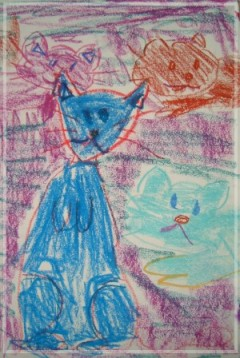

A letter from a Wilm's tumor expert Dr. Marcio Malogolowkin
|
Subject: RE: Last week for Lily? Dear Paul, Suh, and Lily Over the past many months you have reached out to me about Lily's care and I feel honored by that, and by being able to be part of Lily's care. However, I believe that some one that has been beside Lily and your family, I have the responsibility to tell you exactly what I believe is right (?). Lily has had a long and hard battle with cancer, and despite her strength and the wonderful support she has received from you, your wife, the family and the medical staff, the disease has progressed relentlessly. Lily has been one of the best examples of a "fighter" but it gets to a point in the battle against cancer, that we need to accept faith, and make the transition on our lives to be smooth and without suffering. I believe that this time has arrived! Lily deserve to rest and so do you and your family. You should be proud of Lily and all of you. Her memory/spirit will be always with us, but her body is tired and needs the "rest". I am sorry if I cannot come with any further solution for Lily's problems, but I firmly believe in what I said above. Again thank you for the honor of involving me in the care of your daughter. Feel free to continue to contact me as often as you need. Take care, MM |
|  |
•千姿百態的貓 薛老師畫室裡有很多貓，各種貓的顏色、品種、姿態、格性都不相同，有的穩重，有的調皮、有的優雅，我時常邀請他們到我的畫裡來玩玩！ |
- 庭煒,你真的走了嗎?
- 蘋婆與莉莉
- 庭煒的桃花源記
- 生日
- 給你Lily
- Lily,你好棒!
- An essay from a good friend
- A letter from a Wilm's tumor expert
- A letter from Godfather
- 思念遙寄天空裡